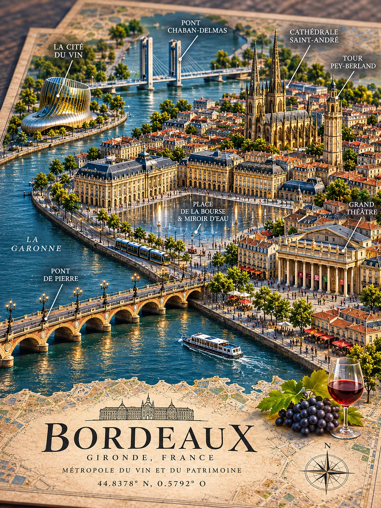

MUSÉES · FAMILLES · SHOPPING
Scannez pour explorer la carte
Scan with your phone camera to explore the map
FRANÇAIS · ENGLISH · ESPAÑOL · ITALIANO · DEUTSCH
Illustration générée par IA

MUSÉES · FAMILLES · SHOPPING
Scannez pour explorer la carte
Scan with your phone camera to explore the map
FRANÇAIS · ENGLISH · ESPAÑOL · ITALIANO · DEUTSCH